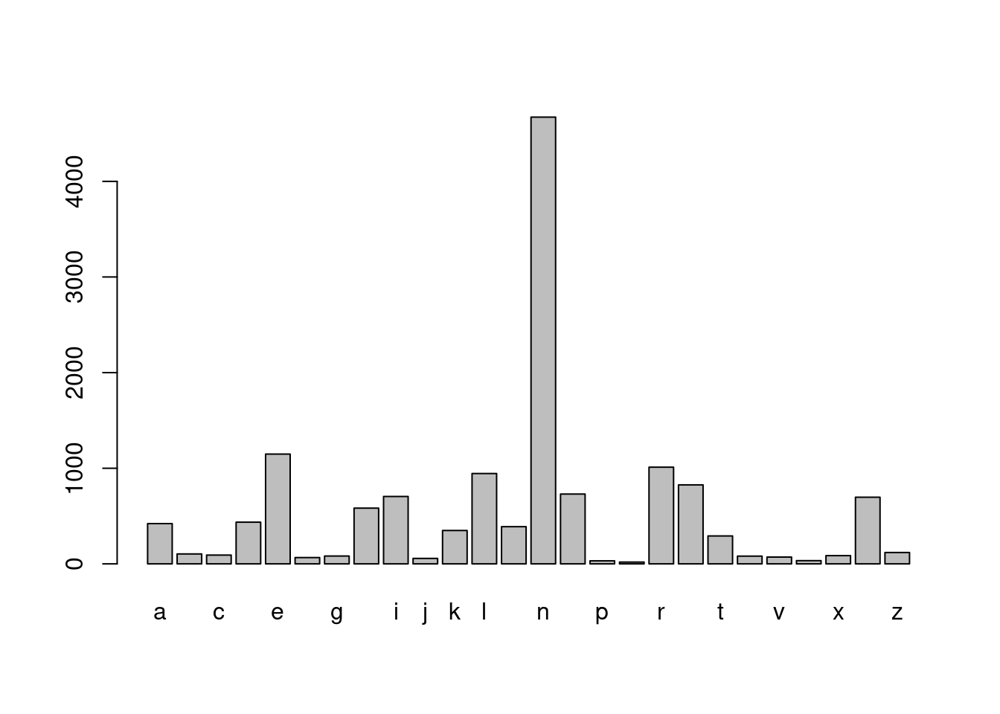
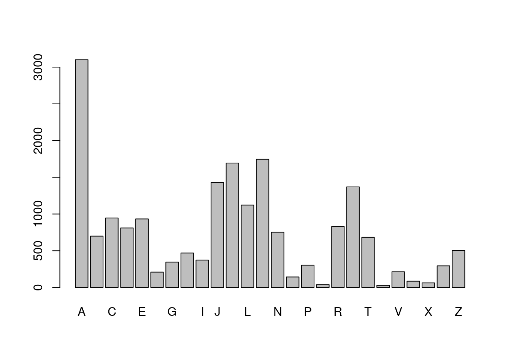
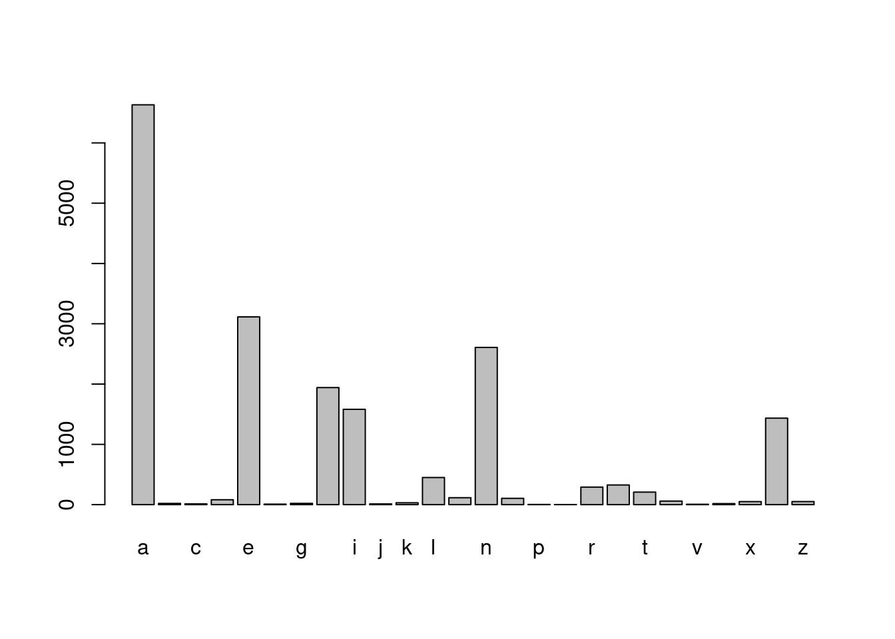
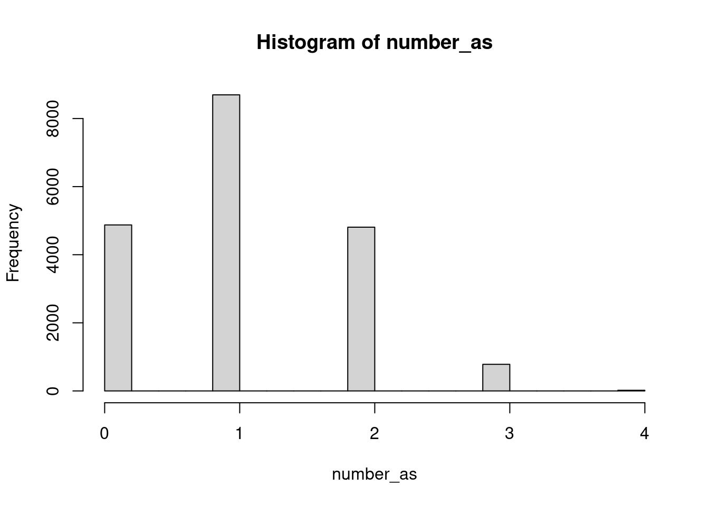
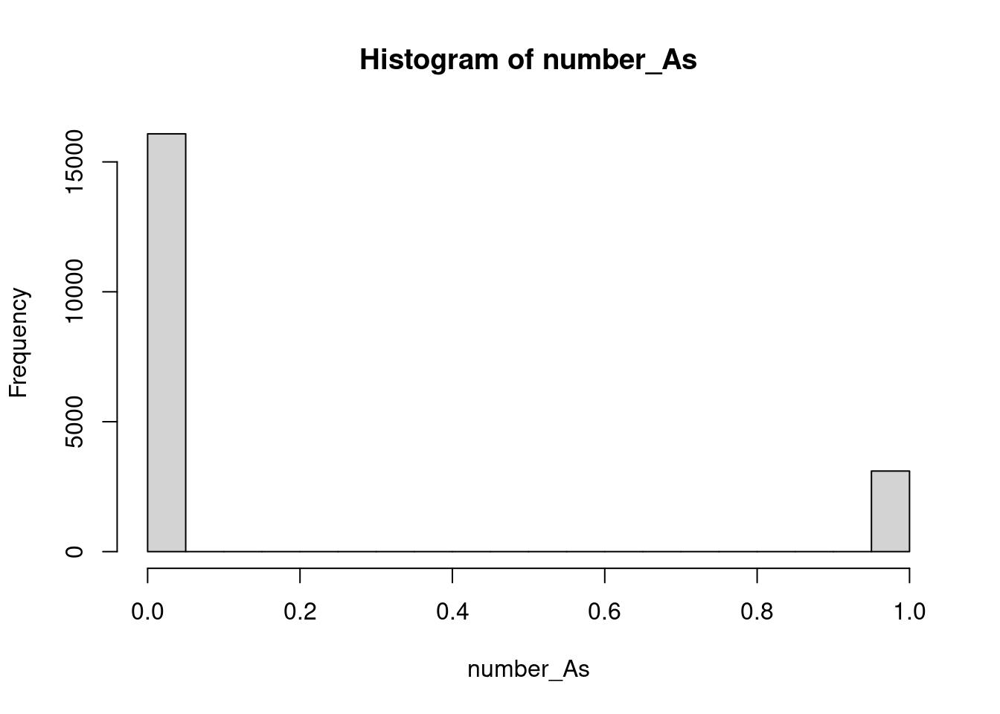

# Define line1
line1 <-"The table was a large one, but the three were all crowded together at one corner of it:"
# Define line2
line2 <- '"No room! No room!" they cried out when they saw Alice coming.'
# Define line3
line3 <- '"There\'s plenty of room!" said Alice indignantly, and she sat down in a large arm-chair at one end of the table.'String manipulation with stringr in r
Quotes
Let’s get started by entering some strings in R. In t he video you saw that you use quotes to tell R to interpret something as a string. Both double quotes (“) and single (’) quotes work, but there are some guidelines for which to use.
First, you should prefer double quotes (“) to single quotes (’). That means, whenever you are defining a string your first intuition should be to use”.
Unfortunately if your string has ” inside it, R will interpret the double quote as “this is the end of the string”, not as “this is the character”“. This is one time you can forget the first guideline and use the single quote, ’, to define the string.
Finally, there are cases where you need both ’ and ” inside the string. In this case, fall back to the first guideline and use ” to define the string, but you’ll have to escape any double quotes inside the string using a backslash (i.e. “).
To practice, you are going to enter a few lines from Lewis Carroll’s Alice’s Adventures in Wonderland. Alice has just arrived at the tea party…
What you see isn’t always what you have
Take a look at line2, the string you just defined, by printing it:
line2 Even though you used single quotes so you didn’t have to escape any double quotes, when R prints it, you’ll see escaped double quotes (“)! R doesn’t care how you defined the string, it only knows what the string represents, in this case, a string with double quotes inside.
When you ask R for line2 it is actually calling print(line2) and the print() method for strings displays strings as you might enter them. If you want to see the string it represents you’ll need to use a different function: writeLines().
You can pass writeLines() a vector of strings and it will print them to the screen, each on a new line. This is a great way to check the string you entered really does represent the string you wanted.
- Perfect! The function cat() is very similar to writeLines(), but by default separates elements with a space, and will attempt to convert non-character objects to a string. We won’t use it in this course, but you might see it in other people’s code.
# Putting lines in a vector
lines <- c(line1, line2, line3)
# Print lines
lines[1] "The table was a large one, but the three were all crowded together at one corner of it:"
[2] "\"No room! No room!\" they cried out when they saw Alice coming."
[3] "\"There's plenty of room!\" said Alice indignantly, and she sat down in a large arm-chair at one end of the table."# Use writeLines() on lines
writeLines(lines)The table was a large one, but the three were all crowded together at one corner of it:
"No room! No room!" they cried out when they saw Alice coming.
"There's plenty of room!" said Alice indignantly, and she sat down in a large arm-chair at one end of the table.# Write lines with a space separator
writeLines(lines,sep="")The table was a large one, but the three were all crowded together at one corner of it:"No room! No room!" they cried out when they saw Alice coming."There's plenty of room!" said Alice indignantly, and she sat down in a large arm-chair at one end of the table.# Use writeLines() on the string "hello\n\U1F30D"
writeLines("hello\n\U1F30D")hello
🌍Escape sequences
You might have been surprised at the output from the last part of the last exercise. How did you get two lines from one string, and how did you get that little globe? The key is the
A sequence in a string that starts with a is called an escape sequence and allows us to include special characters in our strings. You saw one escape sequence in the first exercise: ” is used to denote a double quote.
In hello \n\U1F30D there are two escape sequences: \n gives a newline, and \U followed by up to 8 hex digits sequence denotes a particular Unicode character.
Unicode is a standard for representing characters that might not be on your keyboard. Each available character has a Unicode code point: a number that uniquely identifies it. These code points are generally written in hex notation, that is, using base 16 and the digits 0-9 and A-F. You can find the code point for a particular character by looking up a code chart. If you only need four digits for the codepoint, an alternative escape sequence is \u.
When R comes across a it assumes you are starting an escape, so if you actually need a backslash in your string you’ll need the sequence \
# Should display: To have a \ you need \\
writeLines("To have a \\ you need \\\\")To have a \ you need \\# Should display:
# This is a really
# really really
# long string
writeLines("This is a really \n really really \n long string")This is a really
really really
long string# Use writeLines() with
# "\u0928\u092e\u0938\u094d\u0924\u0947 \u0926\u0941\u0928\u093f\u092f\u093e"
writeLines("\u0928\u092e\u0938\u094d\u0924\u0947 \u0926\u0941\u0928\u093f\u092f\u093e")नमस्ते दुनियाUsing format() with numbers
The behavior of format() can be pretty confusing, so you’ll spend most of this exercise exploring how it works.
Recall from the video, the scientific argument to format() controls whether the numbers are displayed in fixed (scientific = FALSE) or scientific (scientific = TRUE) format.
When the representation is scientific, the digits argument is the number of digits before the exponent. When the representation is fixed, digits controls the significant digits used for the smallest (in magnitude) number. Each other number will be formatted to match the number of decimal places in the smallest number. This means the number of decimal places you get in your output depends on all the values you are formatting!
For example, if the smallest number is 0.0011, and digits = 1, then 0.0011 requires 3 places after the decimal to represent it to 1 significant digit, 0.001. Every other number will be formatted to 3 places after the decimal point.
So, how many decimal places will you get if 1.0011 is the smallest number? You’ll find out in this exercise.
# Some vectors of numbers
percent_change <- c(4, -1.91, 3.00, -5.002)
income <- c(72.19, 1030.18, 10291.93, 1189192.18)
p_values <- c(0.12, 0.98, 0.0000191, 0.00000000002)
# Format c(0.0011, 0.011, 1) with digits = 1
format(c(0.0011, 0.011, 1), digits = 1)[1] "0.001" "0.011" "1.000"# Format c(1.0011, 2.011, 1) with digits = 1
format(c(1.0011, 2.011, 1) , digits = 1)[1] "1" "2" "1"# Format percent_change to one place after the decimal point
format(percent_change, digits = 2)[1] " 4.0" "-1.9" " 3.0" "-5.0"# Format income to whole numbers
format(income, digits = 2)[1] " 72" " 1030" " 10292" "1189192"# Format p_values in fixed format
format(p_values, scientific = FALSE)[1] "0.12000000000" "0.98000000000" "0.00001910000" "0.00000000002"Controlling other aspects of the string
Not only does format() control the way the number is represented, it also controls some of the properties of the resulting string that affect its display.
For example, by default format() will pad the start of the strings with spaces so that the decimal points line up, which is really useful if you are presenting the numbers in a vertical column. However, if you are putting the number in the middle of a sentence, you might not want these extra spaces. You can set trim = TRUE to remove them.
When numbers are long it can be helpful to “prettify” them, for example instead of 1000000000 display 1,000,000,000. In this case a , is added every 3 digits. This can be controlled by the big.interval and big.mark arguments, e.g. format(1000000000, big.mark = “,”, big.interval = 3, scientific = FALSE). These arguments are actually passed on to prettyNum() so head there for any further details.
formatted_income <- format(income, digits = 2)
# Print formatted_income
formatted_income[1] " 72" " 1030" " 10292" "1189192"# Call writeLines() on the formatted income
writeLines(formatted_income) 72
1030
10292
1189192# Define trimmed_income
trimmed_income <- format(income, digits = 2, trim = TRUE)
# Call writeLines() on the trimmed_income
writeLines(trimmed_income)72
1030
10292
1189192# Define pretty_income
pretty_income <- format(income, digits = 2, big.mark = ",")
# Call writeLines() on the pretty_income
writeLines(pretty_income) 72
1,030
10,292
1,189,192formatC()
The function formatC() provides an alternative way to format numbers based on C style syntax.
Rather than a scientific argument, formatC() has a format argument that takes a code representing the required format. The most useful are:
“f” for fixed, “e” for scientific, and “g” for fixed unless scientific saves space When using scientific format, the digits argument behaves like it does in format(); it specifies the number of significant digits. However, unlike format(), when using fixed format, digits is the number of digits after the decimal point. This is more predictable than format(), because the number of places after the decimal is fixed regardless of the values being formatted.
formatC() also formats numbers individually, which means you always get the same output regardless of other numbers in the vector.
The flag argument allows you to provide some modifiers that, for example, force the display of the sign (flag = “+”), left align numbers (flag = “-”) and pad numbers with leading zeros (flag = “0”). You’ll see an example in this exercise
# From the format() exercise
x <- c(0.0011, 0.011, 1)
y <- c(1.0011, 2.011, 1)
# formatC() on x with format = "f", digits = 1
formatC(x, format = "f", digits = 1)[1] "0.0" "0.0" "1.0"# formatC() on y with format = "f", digits = 1
formatC(y, format = "f", digits = 1)[1] "1.0" "2.0" "1.0"# Format percent_change to one place after the decimal point
formatC(percent_change, format = "f", digits = 1)[1] "4.0" "-1.9" "3.0" "-5.0"# percent_change with flag = "+"
formatC(percent_change, format = "f", digits = 1 , flag = "+")[1] "+4.0" "-1.9" "+3.0" "-5.0"# Format p_values using format = "g" and digits = 2
formatC( p_values, format = "g", digits = 2)[1] "0.12" "0.98" "1.9e-05" "2e-11" Annotation of numbers
To get a handle on using paste(), you are going to annotate some of your formatted number strings. The key points to remember are: The vectors you pass to paste() are pasted together element by element, using the sep argument to combine them. If the vectors passed to paste() aren’t the same length, the shorter vectors are recycled up to the length of the longest one. Only use collapse if you want a single string as output. collapse specifies the string to place between different elements.
pretty_percent <- c("4", "-1.9", "3", "-5")
years <- c("2010", "2011", "2012", "2013")
# Add $ to pretty_income
paste("$", pretty_income, sep = "")[1] "$ 72" "$ 1,030" "$ 10,292" "$1,189,192"# Add % to pretty_percent
paste( pretty_percent,"%", sep = "")[1] "4%" "-1.9%" "3%" "-5%" # Create vector with elements like 2010: +4.0%`
year_percent <- paste(years, ": ", pretty_percent, "%", sep ="")
# Collapse all years into single string
paste(year_percent, collapse = ",")[1] "2010: 4%,2011: -1.9%,2012: 3%,2013: -5%"A very simple table
Combining format() and paste() is one way to display very simple tables. Remember, since format() looks at all the values in a vector before formatting, it uses a consistent format and will, by default, align on the decimal point. This is usually the behavior you want for a column of numbers in table.
format() can also take character vectors as input. In this case, you can use the justify argument, specific to character input, to justify the text to the left, right, or center.
You are going to put together the following table:
Year 0 $ 72
Year 1 $ 1,030
Year 2 $ 10,292Project Lifetime $1,189,192 You’ll start by formatting the columns to prepare to put them in a table, then you’ll use paste() to put together each row. Then, you can use writeLines() to display each row on a new line.
# Define the names vector
income_names <- c("Year 0", "Year 1", "Year 2", "Project Lifetime")
# Create pretty_income
pretty_income <- format(income, digits = 2, big.mark = ",")
# Create dollar_income
dollar_income <- paste("$", pretty_income, sep = "")
# Create formatted_names
formatted_names <- format(income_names, justify = "right")
# Create rows
rows <- paste(formatted_names, dollar_income, sep = " ")
# Write rows
writeLines(rows) Year 0 $ 72
Year 1 $ 1,030
Year 2 $ 10,292
Project Lifetime $1,189,192 toppings <- c("anchovies", "artichoke", "bacon", "breakfast bacon",
"Canadian bacon", "cheese", "chicken", "chili peppers",
"feta", "garlic", "green peppers", "grilled onions",
"ground beef", "ham", "hot sauce", "meatballs",
"mushrooms", "olives", "onions", "pepperoni",
"pineapple", "sausage", "spinach", "sun-dried tomato",
"tomatoes")
# Randomly sample 3 toppings
my_toppings <- sample(toppings, size = 3)
# Print my_toppings
my_toppings[1] "pepperoni" "grilled onions" "feta" # Paste "and " to last element: my_toppings_and
my_toppings_and <- paste(c("","","and "),my_toppings,sep = "" )
# Collapse with comma space: these_toppings
these_toppings <- paste(my_toppings_and, collapse = ", ")
# Add rest of sentence: my_order
my_order <- paste("I want to order a pizza with ", these_toppings,".", sep = "")
# Order pizza with writeLines()
writeLines(my_order)I want to order a pizza with pepperoni, grilled onions, and feta.Putting strings together with stringr
For your first stringr function, we’ll look at str_c(), the c is short for concatenate, a function that works like paste(). It takes vectors of strings as input along with sep and collapse arguments.
There are two key ways str_c() differs from paste(). First, the default separator is an empty string, sep = ““, as opposed to a space, so it’s more like paste0(). This is an example of a stringr function, performing a similar operation to a base function, but using a default that is more likely to be what you want. Remember in your pizza order, you had to set sep =”” multiple times.
The second way str_c() differs to paste() is in its handling of missing values. paste() turns missing values into the string “NA”, whereas str_c() propagates missing values. That means combining any strings with a missing value will result in another missing value. Let’s explore this difference using your pizza order from the previous chapter.
- This behavior is nice because you learn quickly when you might have missing values, rather than discovering later weird “NA”s inside your strings. Another stringr function that is useful when you may have missing values, is str_replace_na() which replaces missing values with any string you choose.
library(stringr)
my_toppings <- c("cheese", NA, NA)
my_toppings_and <- paste(c("", "", "and "), my_toppings, sep = "")
# Print my_toppings_and
my_toppings_and[1] "cheese" "NA" "and NA"# Use str_c() instead of paste(): my_toppings_str
my_toppings_str <- str_c(c("", "", "and "), my_toppings, sep = "")
# Print my_toppings_str
my_toppings_str[1] "cheese" NA NA # paste() my_toppings_and with collapse = ", "
paste(my_toppings_and, collapse = ", ")[1] "cheese, NA, and NA"# str_c() my_toppings_str with collapse = ", "
str_c(my_toppings_str, collapse = ", ")[1] NAString length
Our next stringr function is str_length(). str_length() takes a vector of strings as input and returns the number of characters in each string. For example, try finding the number of characters in Batman’s name:
str_length(c(“Bruce”, “Wayne”)) This is very similar to the base function nchar() but you’ll see in the exercises str_length() handles factors in an intuitive way, whereas nchar() will just return an error.
Historically, nchar() was even worse, rather than returning an error if you passed it a factor, it would return the number of characters in the numeric encoding of the factor. Thankfully this behavior has been fixed, but it was one of the original motivations behind str_length().
Take your first look at babynames by asking if girls’ names are longer than boys’ names.
- The average length of the girls’ names in 2014 is about 1/3 of a character longer. Just be aware this is a naive average where each name is counted once, not weighted by how many babies received the name. A better comparison might be an average weighted by the n column in babynames.
library(stringr)
library(babynames)
library(dplyr)
# Extracting vectors for boys' and girls' names
babynames_2014 <- filter(babynames, year == 2014)
boy_names <- filter(babynames_2014, sex == "M")$name
girl_names <- filter(babynames_2014, sex == "F")$name
# Take a look at a few boy_names
head(boy_names)[1] "Noah" "Liam" "Mason" "Jacob" "William" "Ethan" # Find the length of all boy_names
boy_length <- str_length(boy_names)
# Take a look at a few lengths
head(boy_length)[1] 4 4 5 5 7 5# Find the length of all girl_names
girl_length <- str_length(girl_names)
# Find the difference in mean length
mean(girl_length) - mean(boy_length)[1] 0.3374758# Confirm str_length() works with factors
head(str_length(factor(boy_names)))[1] 4 4 5 5 7 5Extracting substrings
The str_sub() function in stringr extracts parts of strings based on their location. As with all stringr functions, the first argument, string, is a vector of strings. The arguments start and end specify the boundaries of the piece to extract in characters.
For example, str_sub(x, 1, 4) asks for the substring starting at the first character, up to the fourth character, or in other words the first four characters. Try it with my Batman’s name:
str_sub(c(“Bruce”, “Wayne”), 1, 4) Both start and end can be negative integers, in which case, they count from the end of the string. For example, str_sub(x, -4, -1), asks for the substring starting at the fourth character from the end, up to the first character from the end, i.e. the last four characters. Again, try it with Batman:
str_sub(c(“Bruce”, “Wayne”), -4, -1) To practice, you’ll use str_sub() to look at popular first and last letters for names.
- Did you see that “A” is the most popular first letter for both boys and girls, and the most popular last letter for girls. However, the most popular last letter for boys’ names was “n”. You might have seen substr() a base R function that is similar to str_sub(). The big advantage of str_sub() is the ability to use negative indexes to count from the end of a string.
# Extract first letter from boy_names
boy_first_letter <- str_sub(boy_names, 1, 1)
# Tabulate occurrences of boy_first_letter
barplot(table(boy_first_letter))
# Extract the last letter in boy_names, then tabulate
boy_last_letter <- str_sub(boy_names, str_length(boy_names), str_length(boy_names))
barplot(table(boy_last_letter))
# Extract the first letter in girl_names, then tabulate
girl_first_letter <- str_sub(girl_names, 1, 1)
barplot(table(girl_first_letter))
# Extract the last letter in girl_names, then tabulate
girl_last_letter <- str_sub(girl_names, str_length(girl_names), str_length(girl_names))
barplot(table(girl_last_letter))
Detecting matches
str_detect() is used to answer the question: Does the string contain the pattern? It returns a logical vector of the same length as that of the input vector string, with TRUE for elements that contain the pattern and FALSE otherwise.
Let’s take a look at a simple example where you have a vector of strings that represent pizza orders:
pizzas <- c(“cheese”, “pepperoni”, “sausage and green peppers”) You can ask which orders contain the pattern “pepper”, with
str_detect(pizzas, pattern = fixed(“pepper”)) Try it out! You should get FALSE TRUE TRUE. Notice how both pepperoni and green peppers contain the pattern of interest.
The output from str_detect() can be used to count the number of occurrences, or to subset out the strings that contain the pattern. You’ll practice both to find the boys’ names that contain “zz”.
# Look for pattern "zz" in boy_names
contains_zz <- str_detect(boy_names, "zz")
# Examine str() of contains_zz
str(contains_zz) logi [1:14047] FALSE FALSE FALSE FALSE FALSE FALSE ...# How many names contain "zz"?
sum(contains_zz)[1] 16# Which names contain "zz"?
boy_names[contains_zz] [1] "Uzziah" "Ozzie" "Ozzy" "Jazz" "Uzziel" "Chazz"
[7] "Izzy" "Azzam" "Izzac" "Izzak" "Fabrizzio" "Jazziel"
[13] "Azzan" "Izzaiah" "Muizz" "Yazziel" boy_df <- filter(babynames_2014, sex == "M")
# Which rows in boy_df have names that contain "zz"?
boy_df[contains_zz,]# A tibble: 16 × 5
year sex name n prop
<dbl> <chr> <chr> <int> <dbl>
1 2014 M Uzziah 67 0.0000328
2 2014 M Ozzie 62 0.0000303
3 2014 M Ozzy 57 0.0000279
4 2014 M Jazz 21 0.0000103
5 2014 M Uzziel 21 0.0000103
6 2014 M Chazz 17 0.00000832
7 2014 M Izzy 16 0.00000783
8 2014 M Azzam 14 0.00000685
9 2014 M Izzac 13 0.00000636
10 2014 M Izzak 8 0.00000391
11 2014 M Fabrizzio 7 0.00000342
12 2014 M Jazziel 6 0.00000293
13 2014 M Azzan 5 0.00000245
14 2014 M Izzaiah 5 0.00000245
15 2014 M Muizz 5 0.00000245
16 2014 M Yazziel 5 0.00000245Subsetting strings based on match
Since detecting strings with a pattern and then subsetting out those strings is such a common operation, stringr provides a function str_subset() that does that in one step.
For example, let’s repeat our search for “pepper” in our pizzas using str_subset():
pizzas <- c(“cheese”, “pepperoni”, “sausage and green peppers”) str_subset(pizzas, pattern = fixed(“pepper”)) We get a new vector of strings, but it only contains those original strings that contained the pattern.
str_subset() can be easily confused with str_extract(). str_extract() returns a vector of the same length as that of the input vector, but with only the parts of the strings that matched the pattern. This won’t be very interesting until we know about regular expressions, so we’ll talk more about this in Chapter 3.
For now, you’ll repeat part of the last exercise using str_subset() and then find a few other interesting names.
# Find boy_names that contain "zz"
str_subset(boy_names, pattern = fixed("zz")) [1] "Uzziah" "Ozzie" "Ozzy" "Jazz" "Uzziel" "Chazz"
[7] "Izzy" "Azzam" "Izzac" "Izzak" "Fabrizzio" "Jazziel"
[13] "Azzan" "Izzaiah" "Muizz" "Yazziel" # Find girl_names that contain "zz"
str_subset(girl_names, pattern = fixed("zz")) [1] "Izzabella" "Jazzlyn" "Jazzlynn" "Lizzie" "Izzy"
[6] "Lizzy" "Mazzy" "Izzabelle" "Jazzmine" "Jazzmyn"
[11] "Jazzelle" "Jazzmin" "Izzah" "Jazzalyn" "Jazzmyne"
[16] "Izzabell" "Jazz" "Mazzie" "Alyzza" "Izza"
[21] "Izzie" "Jazzlene" "Lizzeth" "Jazzalynn" "Jazzy"
[26] "Alizzon" "Elizzabeth" "Jazzilyn" "Jazzlynne" "Jizzelle"
[31] "Izzabel" "Izzabellah" "Izzibella" "Jazzabella" "Jazzabelle"
[36] "Jazzel" "Jazzie" "Jazzlin" "Jazzlyne" "Aizza"
[41] "Brizza" "Ezzah" "Fizza" "Izzybella" "Rozzlyn" # Find girl_names that contain "U"
starts_U <- str_subset(girl_names, pattern = fixed("U"))
starts_U [1] "Unique" "Uma" "Unknown" "Una" "Uriah" "Ursula" "Unity"
[8] "Umaiza" "Urvi" "Ulyana" "Ula" "Udy" "Urwa" "Ulani"
[15] "Umaima" "Umme" "Ugochi" "Ulyssa" "Umika" "Uriyah" "Ubah"
[22] "Umaira" "Umi" "Ume" "Urenna" "Uriel" "Urijah" "Uyen" # Find girl_names that contain "U" and "z"
str_subset(starts_U, pattern = fixed("z"))[1] "Umaiza"Counting matches
Another stringr function that takes a vector of strings and a pattern is str_count(). str_count() answers the question “How many times does the pattern occur in each string?”. It always returns an integer vector of the same length as that of the input vector.
If you count the occurrences of “pepper” in your pizzas, you’ll find no occurrences in the first, and one each in the second and third,
pizzas <- c(“cheese”, “pepperoni”, “sausage and green peppers”) str_count(pizzas, pattern = fixed(“pepper”)) Perhaps a little more interesting is to count how many “e”s occur in each order
str_count(pizzas, pattern = fixed(“e”)) You’ll use str_count() to find some names with lots of repeated letters.
# Count occurrences of "a" in girl_names
number_as <- str_count(girl_names, pattern = fixed("a"))
# Count occurrences of "A" in girl_names
number_As <- str_count(girl_names, pattern = fixed("A"))
# Histograms of number_as and number_As
hist(number_as)
hist(number_As)
# Find total "a" + "A"
total_as <- number_as + number_As
# girl_names with more than 4 a's
girl_names[total_as>4][1] "Aaradhana"Parsing strings into variables
A common use for str_split() is to pull apart raw string data into more useful variables. In this exercise you’ll start by pulling apart a date range, something like “23.01.2017 - 29.01.2017”, into separate variables for the start of the range, “23.01.2017”, and the end of the range, “29.01.2017”.
Remember, if the simplify argument is FALSE (the default) you’ll get back a list of the same length as that of the input vector. More commonly, you’ll want to pull out the first piece (or second piece etc.) from every element, which is easier if you specify simplify = TRUE and get a matrix as output. You’ll explore both of these output types in this exercise.
# Some date data
date_ranges <- c("23.01.2017 - 29.01.2017", "30.01.2017 - 06.02.2017")
# Split dates using " - "
split_dates <- str_split(date_ranges, pattern = fixed(" - "))
split_dates[[1]]
[1] "23.01.2017" "29.01.2017"
[[2]]
[1] "30.01.2017" "06.02.2017"# Some date data
date_ranges <- c("23.01.2017 - 29.01.2017", "30.01.2017 - 06.02.2017")
# Split dates with n and simplify specified
split_dates_n <- str_split(date_ranges,
pattern = fixed(" - "), n = 2, simplify = TRUE)
split_dates_n [,1] [,2]
[1,] "23.01.2017" "29.01.2017"
[2,] "30.01.2017" "06.02.2017"# From previous step
date_ranges <- c("23.01.2017 - 29.01.2017", "30.01.2017 - 06.02.2017")
split_dates_n <- str_split(date_ranges, fixed(" - "), n = 2, simplify = TRUE)
# Subset split_dates_n into start_dates and end_dates
start_dates <- split_dates_n[,1]
end_dates <- split_dates_n[,2]
# Split start_dates into day, month and year pieces
str_split(start_dates, fixed("."), simplify = TRUE) [,1] [,2] [,3]
[1,] "23" "01" "2017"
[2,] "30" "01" "2017"both_names <- c("Box, George", "Cox, David")
# Split both_names into first_names and last_names
both_names_split <- str_split(both_names, fixed(", "), n = 2, simplify = TRUE)
# Get first names
first_names <- both_names_split[, 2]
# Get last names
last_names <- both_names_split[, 1]Some simple text statistics
Generally, specifying simplify = TRUE will give you output that is easier to work with, but you’ll always get n pieces (even if some are empty, ““).
Sometimes, you want to know how many pieces a string can be split into, or you want to do something with every piece before moving to a simpler structure. This is a situation where you don’t want to simplify and you’ll have to process the output with something like lapply().
As an example, you’ll be performing some simple text statistics on your lines from Alice’s Adventures in Wonderland from Chapter 1. Your goal will be to calculate how many words are in each line, and the average length of words in each line.
To do these calculations, you’ll need to split the lines into words. One way to break a sentence into words is to split on an empty space ” “. This is a little naive because, for example, it wouldn’t pick up words separated by a newline escape sequence like in”two\nwords”, but since this situation doesn’t occur in your lines, it will do.
lines <- c("The table was a large one, but the three were all crowded together at one corner of it:",
"\\No room! No room!\ they cried out when they saw Alice coming.",
"\\There’s plenty of room!\ said Alice indignantly, and she sat down in a large arm-chair at one end of the table.")
# Split lines into words
words <- str_split(lines, patter = fixed(" "))
# Number of words per line
lapply(words, length)[[1]]
[1] 18
[[2]]
[1] 12
[[3]]
[1] 21# Number of characters in each word
word_lengths <- lapply(words, nchar)
# Average word length per line
lapply( word_lengths, mean)[[1]]
[1] 3.888889
[[2]]
[1] 4.166667
[[3]]
[1] 4.333333Replacing to tidy strings
You’ve seen one common strategy to pull variables out of strings is to split the string based on a pattern. Sometimes, it’s easier to just replace the parts you don’t want with an empty string ““. This is also a common strategy to clean strings up, for example, to remove unwanted punctuation or white space.
In this exercise you’ll pull out some numbers by replacing the part of the string that isn’t a number, you’ll also play with the format of some phone numbers. Pay close attention to the difference between str_replace() and str_replace_all().
# Some IDs
ids <- c("ID#: 192", "ID#: 118", "ID#: 001")
# Replace "ID#: " with ""
id_nums <- str_replace(ids, 'ID#: ',"" )
# Turn id_nums into numbers
id_ints <- as.numeric(id_nums)
# Some (fake) phone numbers
phone_numbers <- c("510-555-0123", "541-555-0167")
# Use str_replace() to replace "-" with " "
str_replace(phone_numbers, "-", " ")[1] "510 555-0123" "541 555-0167"# Use str_replace_all() to replace "-" with " "
str_replace_all(phone_numbers, "-", " ")[1] "510 555 0123" "541 555 0167"# Turn phone numbers into the format xxx.xxx.xxxx
str_replace_all(phone_numbers, "-", ".")[1] "510.555.0123" "541.555.0167"Review
You’ve covered a lot of stringr functions in this chapter:
str_c() str_length() str_sub() str_detect() str_subset() str_count() str_split() str_replace() As a review we’ve got a few tasks for you to do with some DNA sequences. We’ve put three sequences, corresponding to three genes, from the genome of Yersinia pestis – the bacteria that causes bubonic plague – into the vector genes.
Each string represents a gene, each character a particular nucleotide: Adenine, Cytosine, Guanine or Thymine.
We aren’t going to tell you which function to use. It’s up to you to choose the right one and specify the needed arguments. Good luck!
# Find the number of nucleotides in each sequence
genes <- readRDS("dna.rds")
str_length(genes)[1] 441 462 993# Find the number of A's occur in each sequence
str_count(genes, pattern = fixed("A"))[1] 118 117 267# Return the sequences that contain "TTTTTT"
str_subset(genes, pattern = fixed("TTTTTT"))[1] "TTAAGGAACGATCGTACGCATGATAGGGTTTTGCAGTGATATTAGTGTCTCGGTTGACTGGATCTCATCAATAGTCTGGATTTTGTTGATAAGTACCTGCTGCAATGCATCAATGGATTTACACATCACTTTAATAAATATGCTGTAGTGGCCAGTGGTGTAATAGGCCTCAACCACTTCTTCTAAGCTTTCCAATTTTTTCAAGGCGGAAGGGTAATCTTTGGCACTTTTCAAGATTATGCCAATAAAGCAGCAAACGTCGTAACCCAGTTGTTTTGGGTTAACGTGTACACAAGCTGCGGTAATGATCCCTGCTTGCCGCATCTTTTCTACTCTTACATGAATAGTTCCGGGGCTAACAGCGAGGTTTTTGGCTAATTCAGCATAGGGTGTGCGTGCATTTTCCATTAATGCTTTCAGGATGCTGCGATCGAGATTATCGATCTGATAAATTTCACTCAT"# Replace all the "A"s in the sequences with a "_"
str_replace_all(genes, pattern = fixed("A"), "_")[1] "TT_G_GT___TT__TCC__TCTTTG_CCC___TCTCTGCTGG_TCCTCTGGT_TTTC_TGTTGG_TG_CGTC__TTTCT__T_TTTC_CCC__CCGTTG_GC_CCTTGTGCG_TC__TTGTTG_TCC_GTTTT_TG_TTGC_CCGC_G___GTGTC_T_TTCTG_GCTGCCT___CC__CCGCCCC___GCGT_CTTGGG_T___TC_GGCTTTTGTTGTTCG_TCTGTTCT__T__TGGCTGC__GTT_TC_GGT_G_TCCCCGGC_CC_TG_GTGG_TGTC_CG_TT__CC_C_GGCC_TTC_GCGT__GTTCGTCC__CTCTGGGCC_TG__GT_TTTCTGT_G____CCC_GCTTCTTCT__TTT_TCCGCT___TGTTC_GC__C_T_TTC_GC_CT_CC__GCGT_CTGCC_CTT_TC__CGTT_TGTC_GCC_T"
[2] "TT__GG__CG_TCGT_CGC_TG_T_GGGTTTTGC_GTG_T_TT_GTGTCTCGGTTG_CTGG_TCTC_TC__T_GTCTGG_TTTTGTTG_T__GT_CCTGCTGC__TGC_TC__TGG_TTT_C_C_TC_CTTT__T___T_TGCTGT_GTGGCC_GTGGTGT__T_GGCCTC__CC_CTTCTTCT__GCTTTCC__TTTTTTC__GGCGG__GGGT__TCTTTGGC_CTTTTC__G_TT_TGCC__T___GC_GC___CGTCGT__CCC_GTTGTTTTGGGTT__CGTGT_C_C__GCTGCGGT__TG_TCCCTGCTTGCCGC_TCTTTTCT_CTCTT_C_TG__T_GTTCCGGGGCT__C_GCG_GGTTTTTGGCT__TTC_GC_T_GGGTGTGCGTGC_TTTTCC_TT__TGCTTTC_GG_TGCTGCG_TCG_G_TT_TCG_TCTG_T___TTTC_CTC_T"
[3] "_TG______C__TTT_TCC_____C__C__C___TC_GCTTCGT____TC_TTCTTTTCCCGCC__TT_G_GC__C__CTTGGCTTG_TCG__GTCC_GGCTCCT_TTTTG_GCCGTGTGGGTG_TGG__CCC__G_T__CCTTTCTGGTTCTG_G___GCGGT_C_GGT____GTT__GTC_TTGCCGG_TTC__CTTTTG__GTTGT_C_TTC_TT_GCG__GTGG___CGT____CCTT_GGGCGTTTTG_TTTTGGTGCTG_CC__GGGGTGT_T_CCC_T_TG___GC_TTGCGCCC_G_TG__G_TCGCCTG_GTGCT_TTC_TTCTGT_T_TGT_G_TC_GTGGG_TTGGG__CGGGTT_TGGGGG_CGGTG__CGT__CCTGGCTT_CCTG___TCG_CTGTT__C__G_TTT_TGC_GCG_TT___G___CTG__GCGGCG_TC_GTGCTG_GTTTGGTGTG__GCCTTTCCTGCCGG_TC_T_TTC_GTTT_TCC_C_GTG___GCCTGCGGGCC_G_TTCCCTG_TTT_G_TGCT___GGCCGTG__CGTGC__TTGCC___G_GTT_GGTGCTGTCTTCCTT_T_GGG_TTGGTGGC___TTGGC_G_TGGTC__TCCC_TG_TGTTCGTGCGCC_G_TT_TG_TG_TTGG_CCTCTCCG_GTGCGG__GGTTTCTCTGG_TT___CGGCG_C_TT_TTGTCTGG__CCC__T_TTGG__G_TGCCTTTG_G_T_TCTTCT_TGGG__TTCGTGTTG_TGCCG__GCTCTT__GCGTC_GTT_GCCCTG_CTGGCG_TG__G_CCGCTTGG__CTGG__TGGC_TC__TC_CTGTTGCGCGGTG___TGCC_C___CT_TCGGGGG_GGT_TTGGTC_GTCCCGCTT_GTG_TGTT_TTGCTGC_G___C__C_T_TTGGTC_GGTGC__TGTGGTGTTTGGGGCCCTG___TC_GCG_G___GTTG_TGGCCTGCTGT__"Final challenges
You’ve mastered using stringr functions on their own, but by combining multiple operations together in sequence you can achieve quite complicated manipulations.
As the final exercise we want to expose you to the power of combining operations. You’ll complete two tasks:
You’ll turn a vector of full names, like “Bruce Wayne”, into abbreviated names like “B. Wayne”. This requires combining str_split(), str_sub() and str_c().
You’ll compare how many boy names end in “ee” compared to girl names. This requires combining str_sub() with str_detect() along with the base function table().
# Define some full names
names <- c("Diana Prince", "Clark Kent")
# Split into first and last names
names_split <- str_split(names, pattern = fixed(" "), simplify = TRUE)
# Extract the first letter in the first name
abb_first <- str_sub(names_split[, 1], 1, 1)
# Combine the first letter ". " and last name
str_c(abb_first, names_split[, 2], sep = ".")[1] "D.Prince" "C.Kent" # Use all names in babynames_2014
all_names <- babynames_2014$name
# Get the last two letters of all_names
last_two_letters <- str_sub(all_names, -2, -1)
# Does the name end in "ee"?
ends_in_ee <- str_detect(last_two_letters, pattern = fixed("ee"))
# Extract rows and "sex" column
sex <- babynames_2014[ends_in_ee,]$sex
# Display result as a table
table(sex)sex
F M
572 84 Matching the start or end of the string rebus provides START and END shortcuts to specify regular expressions that match the start and end of the string. These are also known as anchors. You can try it out just by typing
START You’ll see the output
The special operator provided by rebus, %R% allows you to compose complicated regular expressions from simple pieces. When you are reading rebus code, think of %R% as “then”. For example, you could combine START with c,
START %R% “c” to match the pattern “the start of string then a c”, or in other words: strings that start with c. In rebus, if you want to match a specific character, or a specific sequence of characters, you simply specify them as a string, e.g. surround them with “.
library(rebus)
# Some strings to practice with
x <- c("cat", "coat", "scotland", "tic toc")
# Print END
END<regex> $# Run me
str_view(x, pattern = START %R% "c")[1] │ <c>at
[2] │ <c>oat# Match the strings that start with "co"
str_view(x, pattern = START %R% "co")[2] │ <co>at# Match the strings that end with "at"
str_view(x, pattern = "at" %R% END)[1] │ c<at>
[2] │ co<at># Match the string that is exactly "cat"
str_view(x, pattern = START %R% "cat" %R% END )[1] │ <cat># Match the string that is exactly "cat"
str_view(x, pattern = "^cat$" )[1] │ <cat>Matching any character
In a regular expression you can use a wildcard to match a single character, no matter what the character is. In rebus it is specified with ANY_CHAR. Try typing ANY_CHAR in the console. You should see that in the regular expression language this is specified by a dot, ..
For example, “c” %R% ANY_CHAR %R% “t” will look for patterns like “c_t” where the blank can be any character. Consider the strings: “cat”, “coat”, “scotland” and “tic toc”. Where would the matches to “c” %R% ANY_CHAR %R% “t” be?
Test your intuition by running:
str_view(c(“cat”, “coat”, “scotland”, “tic toc”), pattern = “c” %R% ANY_CHAR %R% “t”) Notice that ANY_CHAR will match a space character (c t in tic toc). It will also match numbers or punctuation symbols, but ANY_CHAR will only ever match one character, which is why we get no match in coat
# Match two characters, where the second is a "t"
str_view(x, pattern = "" %R% ANY_CHAR %R% "t")[1] │ c<at>
[2] │ co<at>
[3] │ sc<ot>land
[4] │ tic< t>oc# Match a "t" followed by any character
str_view(x, pattern = "t" %R% ANY_CHAR %R% "")[3] │ sco<tl>and
[4] │ <ti>c <to>c# Match two characters
str_view(x, pattern = ANY_CHAR %R% ANY_CHAR)[1] │ <ca>t
[2] │ <co><at>
[3] │ <sc><ot><la><nd>
[4] │ <ti><c ><to>c# Match a string with exactly three characters
str_view(x, pattern = START %R% ANY_CHAR %R% ANY_CHAR %R% ANY_CHAR %R% END)[1] │ <cat>